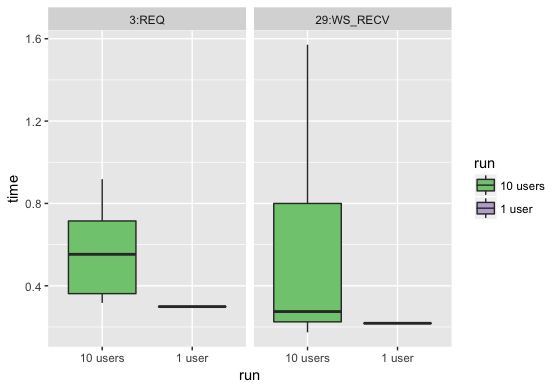

This is a WIP, do not use yet. Please follow community.rstudio.com for a soft launch of the tools.
The shinyloadtest package and the accompanying shinycannon software enable load testing deployed Shiny applications.
Load testing helps developers and administrators estimate how many users their application can support. If an application requires tuning, load testing and load test result analysis can be used to identify performance bottlenecks and to guide changes to infrastructure, configuration, or code.
It’s a common misconception that “Shiny doesn’t scale.” In actuality, properly-architected Shiny applications can be scaled horizontally, a fact which Sean Lopp was recently able to demonstrate at rstudio::conf 2018. We used shinycannon to simulate 10,000 concurrent users interacting with an application deployed to AWS. You can see a recording of Sean’s talk and the load test demonstration here: Scaling Shiny
To get started with shinyloadtest read through the quick start guide below.
Installation
To perform a load test you’ll need two pieces of software: shinyloadtest and shinycannon.
-
shinyloadtestis an R package used to generate recordings and analyze results. You should install it on your development machine. -
shinycannonis the command-line replay tool. You can install it on your development machine for testing, but for best results we recommend installing it on a server, and preferably not the one the application under test is also on.
shinycannon
As opposed to the shinyloadtest R package, shinycannon is installed and run differently depending on platform.
Linux
On many GNU/Linux distributions, shinycannon can be installed using a package:
| Platform | Download URL | Install Command |
|---|---|---|
| Ubuntu/Debian | shinycannon_1.0.0-22cb125_amd64.deb | sudo dpkg -i shinycannon_1.0.0-22cb125_amd64.deb |
| Redhat/Fedora/CentOS | shinycannon_1.0.0-22cb125.x86_64.rpm | sudo yum install -y shinycannon_1.0.0-22cb125.x86_64.rpm |
macOS
- Install Java
- Download shinycannon-1.0.0-22cb125.sh
- Install with
sudo cp shinycannon-1.0.0-22cb125.sh /usr/local/bin/shinycannon; sudo chmod +x /usr/local/bin/shinycannon
Windows
- Install Java
- Download shinycannon-1.0.0-22cb125.jar to the directory you wish to run it in
- Run with
java -jar shinycannon-1.0.0-22cb125.jar
Quick Start
The process for load testing a Shiny application consists of three steps:
- Record a typical user session for the app
- Replay the session in parallel, simulating many simultaneous users accessing the app
- Analyze the results of the load test and determine if the app performed well enough
Rinse and repeat as necessary. Each step is described below.
Step 1: Recording
Record a session using the recordSession function, which takes the URL of the deployed application:
shinyloadtest::record_session('https://beta.rstudioconnect.com/content/3239/')Running the function will open a browser displaying the app. Once open, interact with the application as a normal user would and then close the browser. After closing the browser, a file will be created that contains a recording of the session. This recording, written to recording.log by default, will serve as the basis for the load test.
Step 2: Run the Load Test
With the recording in hand, we’re ready to run the load test. The actual test is conducted outside of R using the stand alone shinycannon tool.
shinycannon can be used from the command line. An easy option is to use shinycannon from the RStudio terminal. The main arguments to shinycannon are:
sessions: The number of concurrent users to simulate.
shinycannonuses separate parallel threads to represent each user.loaded-duration-minutes: The duration of the load test.
shinycannonwill re-run the recording as necessary to meet the specified duration. For example, if the recording is 5 minutes long, but the desired test duration is 18 minutes,shinycannonwill
As an example, to run a load test simulating 100 concurrent users for 20 minutes:
shinycannon recording.log https://beta.rstudioconnect.com/content/3239/ --sessions=100 --loaded-duration-minutes=20s
Logging at INFO level to output_dir/detail.log
2018-06-15T11:22:29.465037Z - Running: 0, Failed: 0, Done: 0
2018-06-15T11:22:29.466399Z - Worker thread 1 warming up
2018-06-15T11:22:29.476858Z - Worker thread 2 warming up
2018-06-15T11:22:29.477245Z - Worker thread 3 warming up
...
2018-06-15T11:22:29.499708Z - Waiting for warmup to complete
...
2018-06-15T11:22:29.516885Z - Maintaining for 20 minutes
2018-06-15T11:28:34.465847Z - Running: 100, Failed: 0, Done: 0
...
2018-06-15T11:44:29.517080Z - Stopped maintaining, waiting for workers to stop
2018-06-15T11:48:34.465847Z - Running: 60, Failed: 0, Done: 40
...shinycannon includes detailed help documentation explaining the other arguments:
shinycannon --helpDuring the test, shinycannon reports the progress and number of simulated users. The result of the test is an output directory which includes timing information for each session.
Step 3: Analyze the Results
The output directory created in step 2 is the focus of step 3. The shinyloadtest R package provides functions for analyzing the output files from the test.
library(shinyloadtest)
results <- tidy_loadtest(
`20 users` = 'load-test-results',
`1 user` = 'baseline-results'
)
results
results %>%
hist_loadtimes()
results %>%
plot_time_boxplot()

Load the results into a shiny flex dashboard
results %>%
make_report() %>%
rmarkdown::run()Links
- Report a bug at
https://github.com/rstudio/shinyloadtest/issues
License
Developers
- Alan Dipert
Author, maintainer - Barbara Borges
Author - Barret Schloerke
Author -

Copyright holder, funder